판금제관기능장 (2003-07-20 기출문제)
1과목: 임의 구분
1. 다음 프레스 작업의 설명 중 틀린 것은 ?
- 꺾임 높이 30mm제품을 프레스 스트로크 65mm로 성형 가능하다.
- 금형을 프레스기에 취부할 때는 상형을 먼저한다.
- 다이스를 고정시키는 주목적은 프레스 기계의 정도를 보존하기 위함이다.
- 마이크로인칭 장치는 형의 고정작업을 용이하게 하기 위한 특별한 장치이다.
(정답률: 알수없음)

2. 전후좌우가 개방되어 있어 작업을 행하기 쉽고 C형 프레임에 유리한 다이 세트(die set)는 ?
- 백 포스트형(back post type)
- 센터 포스트형(center post type)
- 다이애거널 포스트형(diagonal post type)
- 포오 포스트형(four post type)
(정답률: 알수없음)
3. 센터펀치(center punch)의 일반적인 각도는 ?
- 15°
- 30°
- 60°
- 118°
(정답률: 알수없음)
4. 굽힘 작업시 압축도 인장도 받지 않는 부분을 무엇이라 하는가 ?
- 스프링 백
- 최소 굽힘 반지름
- 이방성
- 중립면
(정답률: 알수없음)
5. 소성 변형된 금속재료는 재료의 어떠한 성질이 방향성을 갖는가 ?
- 인장강도
- 밀도
- 비중
- 체적
(정답률: 60%)
6. 그림과 같은 플랜지 붙임 원통형 용기를 우그리기 할 때 블랭크 지름(D)를 계산하면 몇 mm인가 ? (단, 굽힘 부분의 굽힘 반지름은 무시한다.)
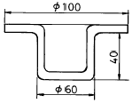
- 140
- 160
- 180
- 200
(정답률: 알수없음)
7. 블랭킹(blanking) 작업이란 ?
- 제품에 강도를 주기위한 작업
- 표면에 모양(무늬)을 새기는 작업
- 구부리는 작업
- 원하는 형상을 잘라 뽑아내는 작업
(정답률: 알수없음)
8. 서로 반대로 되어 있는 한 쌍의 다이 사이에 얇은 판재를 놓고 압축력을 가하여 제품을 성형가공하는 방법은 ?
- 코이닝
- 사이징
- 스웨이징
- 엠보싱
(정답률: 64%)
9. 판두께 14mm, 리벳지름 22mm, 피치 54mm, 리벳 중심에서 판끝까지 길이 35mm의 한줄 리벳 겹치기 이음이 있다. 1피치당 하중은 13.5 kN이라면 리벳에 작용하는 전단응력 τ 는 몇 MPa 인가?
- 25.5
- 35.5
- 45.5
- 55.5
(정답률: 65%)
10. 코킹(Caulking)한 후 기밀을 더욱 완전하게 유지하기 위해 끝이 넓은 끌로 때리는 작업은 ?
- 업세팅(Upsetting)
- 트리밍(trimming)
- 풀러링(fullering)
- 시밍(seaming)
(정답률: 80%)
11. 아크 용접법에서 비소모식 전극봉을 사용하는 것은 ?
- TIG 용접
- MIG 용접
- CO2 용접
- 서브머지드 용접
(정답률: 84%)
12. 이 절단법은 금속,비철금속을 고속도로 절단할 수 있으며 특히 내화물의 절단이 가능한 절단법은 ?
- 플라스마 절단
- 산소 아크 절단
- 금속 아크 절단
- 아크 에어 가우징
(정답률: 90%)
13. 전자빔(electron beam)용접법의 특징은 ?
- 용접부의 용접폭이 넓고 용입이 얇다.
- 수지상(dendrite)조직이 발생한다.
- 용입이 깊으므로 적은 입열로 두꺼운 소재의 용접이 가능하다.
- 가공, 핏(pit) 균열등의 불량이 발생하기 쉽다.
(정답률: 알수없음)
14. 그림과 같은 원뿔을 만들려고 한다. 선형반경(R)과 중심각(θ)의 값으로 알맞는 것은 ? (단, AB = R, AC=1000mm, BC=400mm)
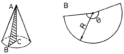
- R : 1077mm, θ: 133.7°
- R : 1177mm, θ: 143.7°
- R : 1077mm, θ: 123.4°
- R : 1177mm, θ: 143.4°
(정답률: 84%)
15. 공작물의 일부분에 열처리 등 특수한 가공을 하는 경우에는 그 범위를 외형선에 약간 떼어서 그리게 되는데 이 때 사용하는 선은 ?
- 가는 실선
- 가는 일점 쇄선
- 굵은 일점 쇄선
- 가상선
(정답률: 67%)
16. 한개의 원기둥에 그보다 작은 원기둥이나 각 기둥이 교차했을 때 그 부분을 실제 투상에 의하지 않고 직선으로 나타내는 투상도는 ?
- 관용 투상도
- 가상 투상도
- 보조 투상도
- 직접 투상도
(정답률: 알수없음)
17. KS통칙에 의한 투상면의 명칭을 올바르게 나타낸 것은?
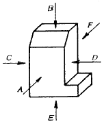
- A = 정면도, B = 평면도, C = 좌측면도, D = 우측면도
- B = 평면도, C = 좌측면도, D = 우측면도, E = 배면도
- C = 우측면도, D = 좌측면도, E = 저면도, F = 배면도
- D = 좌측면도, E = 배면도, F = 저면도, A = 정면도
(정답률: 85%)
18. 다음 중 철의 재결정 온도는?
- 약 150℃
- 약 300℃
- 약 450℃
- 약 600℃
(정답률: 80%)
19. 탄소강에 함유된 원소 중 적열취성이 원인이 되는 황화철(FeS)이 나타나는 것을 방지하는 것은 ?
- Si
- P
- Mn
- Cr
(정답률: 알수없음)
20. 금속을 소성가공할 때 열간가공(고온가공)과 냉간가공(상온가공)을 구별하는데 기준이 되는 것은 ?
- 변태온도
- 재결정온도
- 단조온도
- 천이온도
(정답률: 90%)
2과목: 임의 구분
21. 어느 한 방향으로 소성변형을 가한 재료에 다시 역방향의 하중을 가하면 전과 같은 방향으로 하중을 가한 경우 보다도 소성변형에 대한 저항이 감소한다. 즉 가공경화가 적어지는 이와 같은 것을 무엇이라 하는가 ?
- 바우싱거 효과(Bauschinger effect)
- 소성 히스테리시스(plastic hysteresis)
- 시효경화(age hardening)
- 임계 전단응력(critical resolved shear stress)
(정답률: 55%)
22. 파이프 속을 흐르는 유체의 역류를 방지하여 한 방향으로만 흐르게 하는 역할을 하는 밸브는 ?
- 나비 밸브(butterfly valve)
- 첵 밸브(check valve)
- 게이트 밸브(gate valve)
- 스톱 밸브(stop valve)
(정답률: 90%)
23. 나사의 피치(pitch)가 0.5mm인 마이크로미터에서 딤블의 원주눈금이 100등분 되었다면 읽을 수 있는 최소값은 ?
- 0.0⑤mm
- 0.001mm
- 0.⑤mm
- 0.01mm
(정답률: 알수없음)
24. 변형 교정 작업중 수공구에 의한 변형 교정 작업이 아닌 것은 ?
- 조정나사에 의한 교정
- 변형 수정 받침쇠에 의한 교정
- 변형 교정 롤에 의한 교정
- 짐 크로(jim crow)에 의한 교정
(정답률: 알수없음)
25. 라미네이션(lamination)의 결함을 탐상하는데 가장 적합한 시험법은?
- 침투 탐상시험
- 초음파 탐상시험
- 자분 탐상시험
- 누설검사
(정답률: 알수없음)
26. 강철의 질을 굳게하는 목적으로 가열하여 균일한 오스테나이트 조직을 얻은 다음 급냉하는 조작을 담금질이라고 하는데 가열하는 온도와 가열시간 관계를 바르게 쓴것은?
- A3 또는 A1 점 보다 30 - 50℃ 높게 가열하고 두께 25mm 에 대하여 30분 정도 유지한다.
- A1 변태점 보다 낮은 550 - 650℃ 정도로 가열한다.
- A3 또는 A1 점 보다 20 - 30℃ 높게 가열하고 두께 10mm 당 10분 정도 유지한다.
- 600 - 680℃ 에서 2 - 5시간 가열한다.
(정답률: 알수없음)
27. 표면 경화법 중 화염 경화법의 특징이 아닌 것은 ?
- 피가열물의 크기나 형상에 제한이 적다.
- 국부 담금질을 할 수 있다.
- 작업이 간편하며 경제적이다.
- 사용재료의 선택범위가 좁다.
(정답률: 알수없음)
28. 용접 후 처리작업 중 제 1층에서 피닝(peening)을 하지 않는 이유는?
- 경도를 증가시키기 위하여
- 균열발생을 방지하기 위하여
- 탄소당량을 증가시키기 위하여
- 인성과 강도를 증가시키기 위하여
(정답률: 알수없음)
29. 다음 판금공작용 기계중 폭이 좁은 바이트를 아래와 위에 각각 장치하고 윗날의 상하 운동에 의하여 재료를 절단하는 것은 ?
- 회전 전단기(rotary shear)
- 바이브러 시어(vibro shear)
- 레버 시어(lever shear)
- 직각 전단기(square shear)
(정답률: 알수없음)
30. 가공 행정의 끝부분에서 강력한 힘을 얻을 수 있어 코닝작업 등에 많이 사용되는 프레스는 ?
- 유압 프레스
- 마찰 프레스
- 너클 프레스
- 크랭크 프레스
(정답률: 알수없음)
31. 다음중 토글 프레스(Toggle Press)에 대한 설명으로 맞는 것은 ?
- 행정의 끝부분에서 속도가 늦어지고 힘이 크게 되도록 되어 있다.
- Press의 성능에 비하여 과대한 힘을 필요로 하는 작업에도 적당하다.
- 행정과 크랭크의 회전 각도와의 관계는 싸인 커브를 그리도록 되어 있다.
- 여러 개의 프레스를 하나로 만든 매우 능률적인 프레스이다.
(정답률: 50%)
32. 펀치나 다이에 전단각(shear angle)을 두는 주된 이유는?
- 제품의 굴곡을 없애기 위함
- 전단하는 힘을 적게하기 위함
- 제품의 정밀도를 높이기 위함
- 안전을 위함
(정답률: 알수없음)
33. 프레스 가공중 전단작업에서 얻어진 제품의 단면 형상에 가장 영향을 많이 미치는 것은 ?
- 소재의 전단저항
- 클리어런스
- 가압 시간
- 프레스의 종류
(정답률: 75%)
34. 굽힘 작업을 할 때에 고려해야 할 사항이 아닌 것은 ?
- 판재의 재질
- 판재의 방향성
- 최소 굽힘 반지름
- 잔류응력
(정답률: 20%)
35. 판두께 1.2mm, 굽힘길이 150mm의 연강판을 V-굽힘할 때 굽힘 하중력은 몇 kN 정도인가? (이 때의 다이 견폭(어깨폭)은 8t, 인장강도는 380 MPa, 상수 C는 1.33이다.)
- 11.37
- 30.32
- 45.67
- 56.31
(정답률: 46%)
36. 컨테이너 속에 재료를 넣고 램(ram)으로 압력을 가해 가공하는 것은 어느 것인가 ?
- 압연가공
- 압출가공
- 인발가공
- 전조가공
(정답률: 알수없음)
37. 원통 드로잉(Drawing)에 있어서 재료의 두께가 가장 두꺼워지는 부분은 아래 그림 중 어느부분인가 ?
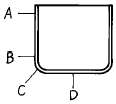
- A
- B
- C
- D
(정답률: 알수없음)
38. 주화나 메달등을 만들때 쓰는 것으로 조각된 한쌍의 다이 사이에 소재를 넣고, 위.아래의 전면에 압축력을 주어 다이 모양으로 만드는 가공방법은?
- 엠보싱(embossing)
- 코이닝(coining)
- 스웨이징(swaging)
- 사이징(sizing)
(정답률: 60%)
39. 다음 중 연납땜에 속하는 것은 ?
- 주석납
- 황동납
- 은납
- 알루미늄납
(정답률: 알수없음)
40. 모재의 한쪽 또는 양쪽에 작은 돌기를 만들어 이 부분에 대전류와 압력을 가해 압접하는 용접법은 ?
- 업셋 용접(upset welding)
- 플레시 용접(flash welding)
- 프로젝션 용접(projection welding)
- 심 용접(seam welding)
(정답률: 알수없음)
3과목: 임의 구분
41. 심 용접에서 롤러(Roller)의 가압력은 점 용접(spot welding)에 비해 약 몇 배로 가압해야 하는가 ?
- 1배
- 1.5배
- 2배
- 2.5배
(정답률: 알수없음)
42. 다음 점용접용 팁중 앵글등과 같이 용접위치가 나쁠 때 사용하는 팁은 ?
- R형
- P형
- C형
- E형
(정답률: 알수없음)
43. 다음중 리벳의 배열방법이 아닌 것은 ?
- 한줄 리벳이음
- 두줄 평행형
- 두줄 지그재그형
- 두줄 대칭형
(정답률: 90%)
44. 두께가 6mm인 철판을 다음 그림과 같이 구부리고자한다. 굽힘에 필요한 재료의 길이는 얼마인가 ? (단, 중립면 이동이 있는 경우)
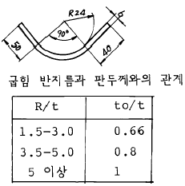
- 127.68mm
- 131.45mm
- 132.39mm
- 137.1mm
(정답률: 알수없음)
45. 도면과 같은 A부분의 치수가 빠져 있는 것을 발견하여 치수를 넣으려 한다. 적당한 것은 어느 것인가 ?
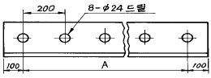
- 1920
- 1000
- 1400
- 1600
(정답률: 79%)
46. 다음 그림중 A부품의 전개도를 그리고져 하면 어떤 전개도법으로 그려야 오차가 작겠는가 ?
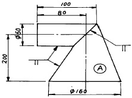
- 평행선법
- 삼각형법
- 방사선법
- 혼합법
(정답률: 알수없음)
47. 치수 기입법 중 현의 길이를 올바르게 표시한 것은 ?
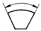
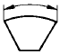
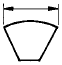
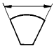
(정답률: 알수없음)
48. 황동 중 델타 메탈(delta metal)은 6.4황동에 어떠한 것을 첨가한 합금인가 ?
- 납
- 주석
- 철
- 망간
(정답률: 59%)
49. 가공성이 풍부하고 내식성이 강하며 해독이 없으므로 가정용기구등에 사용되나 건축용 재료로는 적합하지 않은 강판은 ?
- 아연도금 강판
- 주석도금 강판
- 규소 강판
- 비닐 강판
(정답률: 알수없음)
50. 황동판이 냉간가공후 시간이 오래 경과함에 따라 잔류응력에 의거 균열이 생기는 것은 무엇이라 하는가 ?
- 석출균열
- 잔류균열
- 자기균열
- 자연균열
(정답률: 알수없음)
51. 냉간가공을 하면 감소하는 금속의 기계적 성질은 ?
- 인장강도
- 항복점
- 탄성한계
- 단면수축율
(정답률: 50%)
52. 어떤 종류의 금속 또는 합금은 가공 경화한 직후부터 시간의 경과와 더불어 기계적 성질이 변화하나 나중에는 일정값을 나타낸다. 이러한 현상을 무엇이라 하는가 ?
- 동소변태
- 시효경화
- 자기변태
- 저온풀림
(정답률: 알수없음)
53. 다음 측정기 중 비교 측정기는?
- 버어니어 캘리퍼스
- 마이크로 미터
- 공기 마이크로 미터
- 한계 게이지
(정답률: 알수없음)
54. 판두께를 얇게하여 단면의 성능을 좋게하고 비교적 하중이 작은 구조물에 사용하며, 국부좌굴을 방지하기 위하여 립(lip)을 붙인 강은 ?
- ㄱ형강
- H형강
- ㄷ형강
- 경량형강
(정답률: 알수없음)
55. 어떤 측정법으로 동일 시료를 무한 횟수 측정하였을 때 데이터의 분포의 평균치와 참값과의 차를 무엇이라 하는가?
- 신뢰성
- 정확성
- 정밀도
- 오차
(정답률: 알수없음)
56. 예방보전의 기능에 해당하지 않는 것은?
- 취급되어야 할 대상설비의 결정
- 정비작업에서 점검시기의 결정
- 대상설비 점검개소의 결정
- 대상설비의 외주이용도 결정
(정답률: 알수없음)
57. 관리한계선을 구하는데 이항분포를 이용하여 관리선을 구하는 관리도는?
- Pn 관리도
- U 관리도
 관리도
관리도- X 관리도
(정답률: 73%)
58. 로트(Lot)수를 가장 올바르게 정의한 것은?
- 1회 생산수량을 의미한다.
- 일정한 제조회수를 표시하는 개념이다.
- 생산목표량을 기계대수로 나눈 것이다.
- 생산목표량을 공정수로 나눈 것이다.
(정답률: 82%)
59. 다음의 데이터를 보고 편차 제곱합(S)을 구하면? (단, 소숫점 3자리까지 구하시오.)
- 0.338
- 1.029
- 0.114
- 1.014
(정답률: 알수없음)
60. 공정 도시기호중 공정계열의 일부를 생략할 경우에 사용되는 보조 도시기호는?


(정답률: 알수없음)